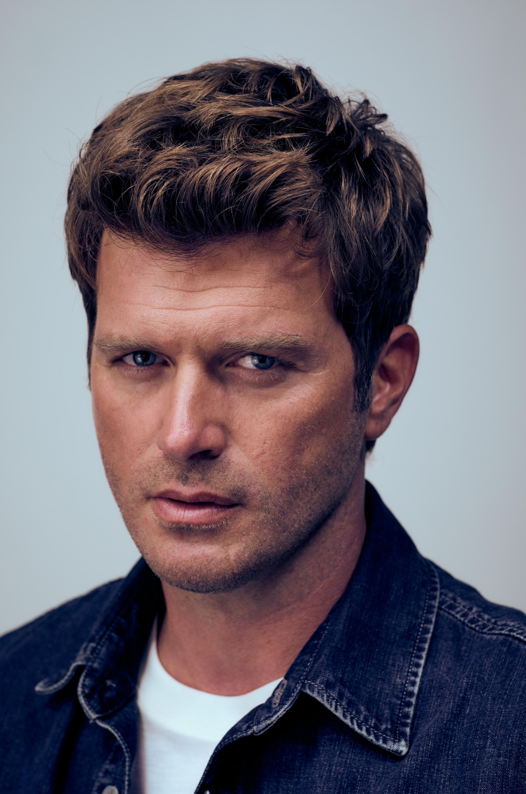
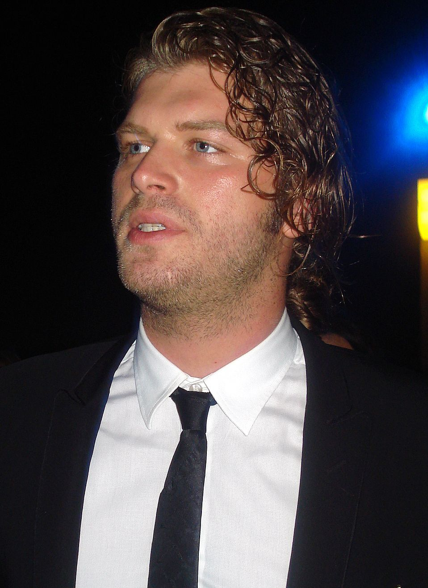
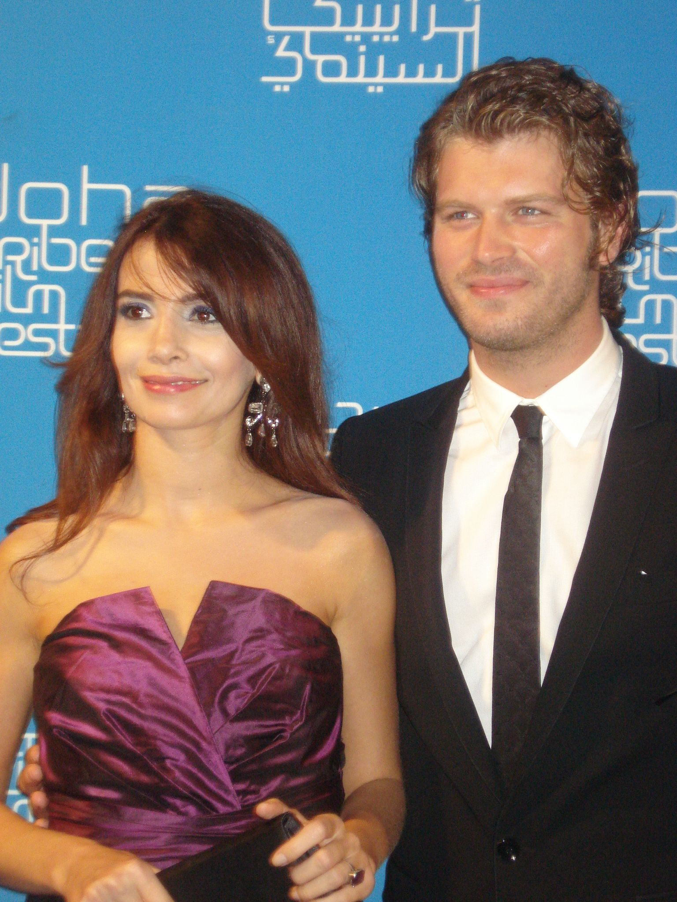

Kıvanç Tatlıtuğ Biography: Age, Movies, TV Shows, Net Worth and Personal Life
He was a professional basketball player before he was an actor, a world modelling champion before he was a television star, and the face of the Turkish drama boom before streaming existed. Kıvanç Tatlıtuğ — often called the “Turkish Brad Pitt” in the Turkish press — is Behlül from Aşk-ı Memnu, Kuzey from Kuzey Güney, and, since October 2026, Sarı Saruhan in Netflix’s Money Trap. He is the fifth Turkish celebrity on Stars of Europe, after Can Yaman, Demet Özdemir, Hande Erçel and Burak Özçivit.

Key takeaways
- Born 27 October 1983 in Adana, Turkey; age 43 as of November 2026. A former professional under-18 basketball player whose career ended with a dislocated leg.
- Won Best Model of Turkey and Best Model of the World in 2002, then moved into acting with Gümüş (2005–07).
- Breakthrough as Behlül Haznedar in Aşk-ı Memnu (2008–10), then Kuzey Tekinoğlu in Kuzey Güney (2011–13) and Aslan Soykan in Aile (2023–24).
- Four Golden Butterfly Awards for Best Actor — for Aşk-ı Memnu (2009 and 2010), Kuzey Güney (2012) and Aile (2023).
- Back on Netflix in Money Trap (Organize İşler: Karun Hazinesi), released 16 October 2026, as Sarı Saruhan. In August 2026 he closed his Instagram account, which had about 5 million followers.
- Net worth is estimated at $15m–$25m. Married to stylist Başak Dizer since 2016; their son Kurt Efe was born in April 2022.
Who Is Kıvanç Tatlıtuğ?
| Full name | Kıvanç Tatlıtuğ |
|---|---|
| Date of birth | 27 October 1983 |
| Age | 43 (as of November 2026) |
| Birthplace | Adana, Turkey |
| Nationality | Turkish |
| Height | 1.87 m (6 ft 2 in), as listed in his biographies |
| Profession | Actor, model, former basketball player |
| Years active | 2002–present |
| Known for | Gümüş, Aşk-ı Memnu, Kuzey Güney, Cesur ve Güzel, Aile, Money Trap |
| Spouse | Başak Dizer (married 2016) |
| Children | 1 son, Kurt Efe (born 2022) |
| Net worth | $15m–$25m (estimated range) |
Kıvanç Tatlıtuğ is one of Turkey’s biggest television stars, and one of the few Turkish actors whose name travels with the dramas themselves. His series have been watched across the Middle East, Latin America, Europe and beyond, and he has been a leading man for almost twenty years without a real break: from Gümüş in 2005 to Aile in 2024, and now to Netflix’s Money Trap in 2026. He is tall, famously good-looking — the Turkish press has called him the “Turkish Brad Pitt” for years — and, unusually for a star of his size, he has kept his private life almost entirely out of the press.
What makes his story different from the usual model-turned-actor story is how it started. He did not grow up dreaming of the screen. He grew up in Adana, in a family that had run a bakery for more than a hundred years, and his first plan was basketball. He played professionally as a teenager, for some of Turkey’s biggest clubs. A dislocated leg ended that career — and only then did modelling, and then acting, take its place.
Age and Early Life — Adana, Basketball and a Bakery
Kıvanç Tatlıtuğ was born on 27 October 1983 in Adana, in southern Turkey, to Erdem and Nurten Tatlıtuğ. His mother is Turkish, from Edirne, in the far west of the country. His paternal grandfather was an Albanian from Pristina, and his paternal grandmother was a Bosniak from Sarajevo. He has said that he was born and raised in Adana, and that his family has had a bakery business in the city for more than a hundred years.
He studied at Yenice Çağ Private High School, where he stood out at basketball. When his father fell ill, the family moved to Istanbul so that his father could receive proper treatment. In Istanbul, Kıvanç played as a professional under-18 basketball player for Beşiktaş, Fenerbahçe, Ülkerspor and several other clubs. A dislocated leg ended his basketball career before it had properly begun.
He went on to graduate from Istanbul Kültür University in 2013, long after he was already famous — a detail that says something about how he works. He finished what he started, even when the fame had already arrived. A sculpture of him has been displayed at Madame Tussauds Istanbul, a measure of how far beyond television his fame now reaches.


From Modelling to Acting
In 2002, at 18, Kıvanç won Best Model of Turkey — and then Best Model of the World the same year. It was a fast start, and it could easily have been the whole story: a handsome teenager, a modelling career, and nothing more. Instead, modelling became the way in, not the destination.
His first leading television role came in 2005, in Gümüş (Silver), where he played Mehmet Şadoğlu opposite Songül Öden. The series ran until 2007 and made him a household name in Turkey. He followed it with Menekşe ile Halil (2007–08), and a guest appearance in the fantasy series Acemi Cadı. He had also hosted pageants and shows along the way, but by 2008 it was clear that acting, not presenting or modelling, was the career.


Aşk-ı Memnu — The Breakthrough
Aşk-ı Memnu (Forbidden Love, 2008–10) is the series that made Kıvanç Tatlıtuğ a star beyond Turkey. He played Behlül Haznedar, the charming, reckless nephew of Adnan Ziyagil, opposite Beren Saat as Bihter. The story — an affair inside a wealthy Istanbul family, adapted from Halid Ziya Uşaklıgil’s classic 1899 novel — became one of the most talked-about Turkish dramas of its time, and it travelled far beyond Turkey, bringing Turkish television to audiences that had never watched it before.
Behlül is the role people still name first when they talk about him. It won him his first two Golden Butterfly Awards for Best Actor, in 2009 and 2010, and it set the pattern for the rest of his career: big, emotionally demanding leading roles in series that run for years and are watched well outside Turkey. He was 25 when it started, and it made him, almost overnight, the leading man Turkish television would build its next decade around.
There was one more step in the same period that mattered. In 2010 he took a small but memorable guest role in Ezel, playing Sekiz — a part that is often described as a turning point in his career, the moment he showed he could do something darker and stranger than the romantic lead.
Kuzey Güney and Later Television
Kuzey Güney (2011–13) gave him his second defining role: Kuzey Tekinoğlu, the hot-headed younger brother in a family drama about two brothers on opposite sides of the law. It ran for two years on Kanal D, won him another Golden Butterfly for Best Actor in 2012, and confirmed what Aşk-ı Memnu had suggested — that he could carry a long series on his own name.
The roles kept coming, and they kept changing shape. In Kurt Seyit ve Şura (2014) he played a Crimean Tatar officer in a historical romance, opposite Farah Zeynep Abdullah. In Cesur ve Güzel (Brave and Beautiful, 2016–17) he was Cesur Alemdaroğlu, opposite Tuba Büyüküstün. In Çarpışma (Crash, 2018–19) he played the detective Kadir Adalı, alongside Elçin Sangu and Onur Saylak.
Then came Aile (The Family, 2023–24), in which he played Aslan Soykan, the head of a powerful family with a psychologist wife — a role that won him his fourth Golden Butterfly for Best Actor in 2023. Nearly twenty years after Gümüş, he was still winning the biggest television acting prize in Turkey, for a series that was still appointment viewing.
Films and Netflix — Money Trap
Kıvanç’s film career has run alongside the television work, in smaller doses. His first film was the comedy Amerikalılar Karadenizde 2 (2007). He voiced Ken in the Turkish dubbed version of Toy Story 3 (2010). His most respected film role is the poet Muzaffer Tayyip Uslu in Kelebeğin Rüyası (The Butterfly’s Dream, 2013), a drama about two young poets in wartime Zonguldak fighting tuberculosis — a performance that won him the Yeşilçam Cinema Award for Best Actor. Later films include Hadi Be Oğlum (2018), Âşıklar Bayramı (2022), Boğa Boğa (2023) and İstanbul İçin Son Çağrı (2023).
In 2018 he joined Yılmaz Erdoğan’s caper franchise as Sarı Saruhan in Organize İşler: Sazan Sarmalı — released internationally as Money Trap — and in 2026 the franchise came back as a Netflix series. Money Trap (Organize İşler: Karun Hazinesi) premiered worldwide on Netflix on 16 October 2026, eight episodes in Turkish with subtitles and dubbing, created and written by Erdoğan and directed by Şenol Sönmez. Kıvanç returns as Sarı Saruhan, alongside Erdoğan himself as the con man Asım Noyan, Ezgi Mola, Bensu Soral and Rıza Kocaoğlu, in a story about a map to the treasure of the Anatolian king Karun. It is his most visible international project in years — and it arrives just as he has stepped back from social media, letting the work speak for itself.
He had already worked with Netflix before: as Arman, the researcher, in the second season of the science-fiction series Into the Night (2021) and its Turkish spin-off Yakamoz S-245 (2022), in which he played the lead. Those two series took him to an audience that had never watched a Turkish drama — the same audience Money Trap is aimed at now.
Awards — Four Golden Butterflies
Kıvanç Tatlıtuğ has won the Golden Butterfly Award for Best Actor four times: for Aşk-ı Memnu in 2009 and again in 2010, for Kuzey Güney in 2012, and for Aile in 2023. The Golden Butterfly — the Altın Kelebek — is Turkey’s best-known television award, and four Best Actor wins put him among the most awarded leading men in its history. He has also won two Golden Butterfly awards for Best Couple, and the Yeşilçam Cinema Award for Best Actor in a Leading Role for Kelebeğin Rüyası.
He has been honoured off screen as well. Since 2011 he has served as a UNICEF Goodwill Ambassador in Turkey, working on campaigns for children’s rights — a role he has kept for more than a decade, quietly, without turning it into publicity.
Net Worth 2026
Kıvanç Tatlıtuğ’s net worth is estimated at $15 million–$25 million. That is a range, not a single figure, and it is an estimate. The sources disagree: several 2025–26 profiles put his fortune at about $15 million, while at least one video roundup puts it at about $25 million, so no exact number is given here. The range reflects almost twenty years as the leading man of Turkey’s biggest television series, plus films, modelling and streaming work. His Top 10 Richest position will be confirmed from the live page after this article is uploaded. See our Top 10 Richest Celebrities page for the current ranking.
Personal Life
Kıvanç Tatlıtuğ married the stylist Başak Dizer on 19 February 2016, at the Turkish embassy in Paris. Their first child, a son named Kurt Efe, was born in April 2022. He keeps his family life private — there are no public photographs of his wife or son on Wikimedia Commons, and the family is rarely seen together in public.
In August 2026 he made a decision that surprised even his own fans: he closed his official Instagram account, which had about 5 million followers, without giving a reason. Turkish press reported that the account was shut down on his own initiative, not because of any rule violation or attack, and that no official statement was given. Industry reports suggested a digital detox — a step back from social media to focus on his work — but that is only a suggestion; he himself has said nothing about it. It fits a pattern: he has always let the roles do the talking, and in 2026 he took that further than any Turkish star before him.
He still lives in Istanbul, where his family moved when he was a teenager, and he remains close to the Adana roots he talks about in interviews — the bakery, the basketball courts, and the family that has been in the city for more than a hundred years.
Filmography Highlights
| Year | Title | Role |
|---|---|---|
| 2005–07 | Gümüş (TV) | Mehmet Şadoğlu |
| 2007–08 | Menekşe ile Halil (TV) | Halil Tuğlu |
| 2008–10 | Aşk-ı Memnu (TV) | Behlül Haznedar |
| 2010 | Ezel (TV) | Sekiz |
| 2011–13 | Kuzey Güney (TV) | Kuzey Tekinoğlu |
| 2013 | Kelebeğin Rüyası | Muzaffer Tayyip Uslu |
| 2014 | Kurt Seyit ve Şura (TV) | Kurt Seyit |
| 2016–17 | Cesur ve Güzel (TV) | Cesur Alemdaroğlu |
| 2018 | Organize İşler: Sazan Sarmalı | Sarı Saruhan |
| 2018 | Hadi Be Oğlum | Ali |
| 2018–19 | Çarpışma (TV) | Kadir Adalı |
| 2021 | Into the Night (Netflix) | Arman |
| 2022 | Yakamoz S-245 (Netflix) | Arman |
| 2023–24 | Aile (TV) | Aslan Soykan |
| 2023 | Boğa Boğa | Yalın |
| 2023 | İstanbul İçin Son Çağrı | Mehmet |
| 2026 | Money Trap (Netflix) | Sarı Saruhan |
FAQs
How old is Kıvanç Tatlıtuğ?
Kıvanç Tatlıtuğ was born on 27 October 1983 in Adana, Turkey. He is 43 years old as of November 2026.
What is Kıvanç Tatlıtuğ most famous for?
Aşk-ı Memnu (2008–10), in which he played Behlül Haznedar opposite Beren Saat. Kuzey Güney (2011–13) as Kuzey Tekinoğlu and Gümüş (2005–07) are his other defining series, and he is back on Netflix in Money Trap (2026).
Was Kıvanç Tatlıtuğ really a basketball player?
Yes. He played professional under-18 basketball in Istanbul for clubs including Beşiktaş, Fenerbahçe and Ülkerspor, after his family moved there from Adana for his father’s medical treatment. A dislocated leg ended his basketball career, and he moved into modelling and then acting.
How tall is Kıvanç Tatlıtuğ?
He is listed at 1.87 m (6 ft 2 in) in his biographies. Wikipedia does not list a height, so the figure is given with that qualification.
Who is Kıvanç Tatlıtuğ married to?
He has been married since 19 February 2016 to the stylist Başak Dizer. They married at the Turkish embassy in Paris. Their son, Kurt Efe, was born in April 2022.
What is Kıvanç Tatlıtuğ's net worth?
His net worth is estimated at $15 million–$25 million. Sources disagree — several profiles say about $15 million, one roundup says about $25 million — so no single number is given.
What is Money Trap?
Money Trap (Organize İşler: Karun Hazinesi) is an eight-episode Netflix series that premiered worldwide on 16 October 2026. Created and written by Yılmaz Erdoğan and directed by Şenol Sönmez, it follows the con man Asım Noyan and his crew chasing a map to the treasure of King Karun. Kıvanç Tatlıtuğ returns as Sarı Saruhan, the role he first played in the 2018 film Organize İşler: Sazan Sarmalı.
Did Kıvanç Tatlıtuğ delete his Instagram?
Yes. In August 2026 he closed his official Instagram account, which had about 5 million followers. Turkish press reported that he shut it down on his own initiative, not because of a rule violation or an attack, and no official reason was given.
How many Golden Butterfly awards has he won?
Four Golden Butterfly Awards for Best Actor: for Aşk-ı Memnu in 2009 and 2010, for Kuzey Güney in 2012, and for Aile in 2023. He has also won two Golden Butterfly awards for Best Couple and a Yeşilçam Cinema Award for Best Actor.
Is Kıvanç Tatlıtuğ a UNICEF ambassador?
Yes. He has served as a UNICEF Goodwill Ambassador in Turkey since 2011, working on campaigns for children’s rights.
Sources
Facts in this article were checked against: Wikipedia — Kıvanç Tatlıtuğ (birth date/place 27 October 1983 Adana, age 43, parents Erdem and Nurten, mother from Edirne, paternal grandfather Albanian from Pristina, paternal grandmother Bosniak from Sarajevo, family bakery 100+ years, Yenice Çağ Private High School, basketball, move to Istanbul for father’s treatment, U18 professional basketball for Beşiktaş, Fenerbahçe, Ülkerspor and others, dislocated leg, Istanbul Kültür University graduation 2013, marriage to Başak Dizer 19 February 2016 at the Turkish embassy in Paris, son Kurt Efe born April 2022, Madame Tussauds Istanbul sculpture, four Golden Butterfly Best Actor awards 2009, 2010, 2012, 2023, two Best Couple awards, Yeşilçam Cinema Award, Best Model of Turkey and Best Model of the World 2002, filmography 2005–2026, Organize İşler: Karun Hazinesi 2026 as Sarı Saruhan); Netflix/press coverage of Money Trap (Martin Cid Magazine, Latest Netflix, TVmaze: eight episodes, worldwide Netflix premiere 16 October 2026, created and written by Yılmaz Erdoğan, directed by Şenol Sönmez, cast including Ezgi Mola, Bensu Soral, Rıza Kocaoğlu and Demet Akbağ); Türkiye Today, Haberler and Onedio (Instagram account closed 12 August 2026, about 5 million followers, own initiative, no official reason given); Wikimedia Commons (hero photo: “Kivanc-viki,.jpg”, Mavi Jeans, CC BY-SA 4.0, VRTS permission confirmed; 2009 photo: “Kıvanç Tatlıtuğ 2009.jpg”, D@lY3D Abdelmaksoud, CC BY 2.0; Songül Öden photo: “Songül Öden and Kıvanç Tatlıtuğ 2009.jpg”, daly3d abd, CC BY 2.0). All writing is original to Stars of Europe. No thin biography blogs were used as sources; net-worth tracker figures are used only for the range above. Deliberately left out: a low-quality claim of a marriage to Azra Akın in 2013–15, which Wikipedia does not support (only Başak Dizer, m. 2016); and any claim that he closed his X account, which was not verified from a quality source — only the Instagram closure of August 2026 is stated.